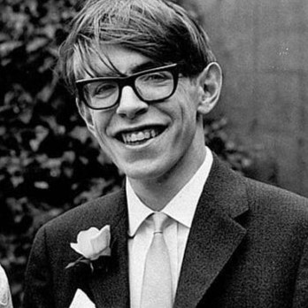

"Stephen Hawking (1942-2018) foi um físico teórico britânico nascido em 8 de Janeiro de 1942, em Oxford, exatamente 300 anos após a morte do físico italiano Galileu Galilei. Hawking tornou-se um dos maiores cientistas de todos os tempos e foi o responsável por grande parte das maiores descobertas relacionadas à astrofísica moderna."
Fámilia

"Mesmo de famílias pobres, o pai de Stephen, Frank Hawking, formou-se em Medicina e sua mãe, Isobel Hawking, cursou Filosofia, Política e Economia, ambos na Universidade de Oxford. Em 1962, Stephen entrou para o Trinity Hall College, em Cambridge, onde, apesar de não dedicar tanto tempo aos estudos quanto os seus colegas, formou-se com honrarias.
Stephen casou-se em 1965 com Jane Wilde, então estudante de Letras que conheceu durante a graduação, com quem teve três filhos, Robert (1967), Lucy (1970), sua única filha, e Timothy (1979).
Em 1990, Hawking e Jane divorciaram-se. Cinco anos depois, Hawking casou-se com uma de suas enfermeiras, Elaine Mason. Em 2006, ele e Elaine divorciaram-se, e a separação reaproximou o físico de sua família e também de sua ex-esposa."
Feitos científicos e legado
"O legado de Hawking para a Ciência é vasto. Apesar de todas as suas dificuldades, ele foi capaz de escrever diversos livros de divulgação científica e ainda criar teses pautadas nas teorias da gravidade, termodinâmica e mecânica quântica, que nos dão pistas sobre o funcionamento do Universo. Conheça a seguir algumas dessas teorias de Hawking.
Singularidades (1970)
Em 1970, juntamente ao físico inglês Roger Penrose, Hawking provou que as singularidades (pontos onde o espaço-tempo é infinitamente curvado) podiam ser formadas no interior dos buracos negros. Ao expandir sua ideia para a origem do Universo, Hawking também sugeriu que o início se deu por meio de uma dessas singularidades.
Funcionamento dos buracos negros (1972)
Uma das leis sugeridas por Hawking dizia que a área superficial de um buraco negro nunca se altera, contradizendo as predições vigentes pela Física clássica e até mesmo algumas das ideias da Física Quântica. Hawking também mostrou que os buracos negros poderiam ser estudados em termos de três variáveis fundamentais: massa, momento angular e quantidade de carga elétrica.
O desaparecimento dos buracos negros (1975)
Até os estudos apresentados por Hawking, acreditava-se que nada seria capaz de escapar do campo gravitacional dos buracos negros, porém esse cientista pôde mostrar que, devido a efeitos quânticos, uma pequena quantidade de radiação eletromagnética pode escapar da incrível gravidade deles. Esse tipo de radiação térmica ficou conhecida como Radiação de Hawking. Essa emissão de energia é muito lenta, mas, ao longo de bilhões de anos, ela é responsável por evaporar completamente o conteúdo dos buracos negros.
Somos fruto das flutuações quânticas (1982)
Hawking nunca teve medo de se contradizer. O físico havia afirmado que o Universo sempre havia existido e sempre existiria, mas, alguns anos depois, fez uma das suas mais polêmicas teorias sobre a origem do Universo: ele teria surgido do nada e, durante a sua expansão, logo após o Big Bang, houve um período inflacionário, no qual seu crescimento foi excepcionalmente rápido. Nesse período, as flutuações quânticas teriam dado forma ao espaço, ao tempo e às forças da natureza como as conhecemos hoje."
"Durante grande parte dos seus estudos, Hawking tentou unificar a gravidade à Teoria quântica para explicar completamente os buracos negros e o próprio funcionamento do Universo."
Doença
"Também conhecida como doença de Lou Gehrig, a Esclerose Lateral Amiotrófica (ELA) é uma doença neurológica e degenerativa que atinge os neurônios motores, promovendo a atrofia dos músculos. Apesar dos efeitos degenerativos, a doença não afeta a capacidade cognitiva dos portadores. ELA é uma doença sem cura, e o tratamento visa a melhorar a qualidade de vida daqueles que a possuem.
Quando descobriu ser portador dessa doença, aos 21 anos, os médicos de Stephen Hawking deram-lhe uma expectativa de vida de dois anos. No entanto, sua doença progrediu lentamente. Hawking viveu até a idade de 76 anos, quando faleceu em 14 de março de 2018."
Obras
"Hawking foi autor e coautor de 15 livros de divulgação científica, mesmo com suas dificuldades motoras. Em suas últimas publicações, sentado em uma cadeira de rodas, o físico usava o movimento do queixo para digitar, em média, uma palavra por minuto. Suas publicações mais distintas foram:
Uma breve história do tempo
Escrito em 1988 e traduzido em mais de 40 línguas diferentes, o livro apresenta, de forma acessível, uma visão geral sobre os conceitos de espaço e tempo baseados nas teorias da Relatividade Geral e da Mecânica quântica, bem como uma teoria da origem do universo, suas propriedades e o seu possível futuro. Em 20 anos, o livro vendeu mais de 10 milhões de cópias.
O universo numa casca de noz
Publicado em 2001, esse livro é mais ilustrado, ainda mais fácil de ser compreendido que o anterior e contempla a explicação das teorias cosmológicas mais recentes sobre a origem do universo."
Componentes: Josemar, Sandra, Christian